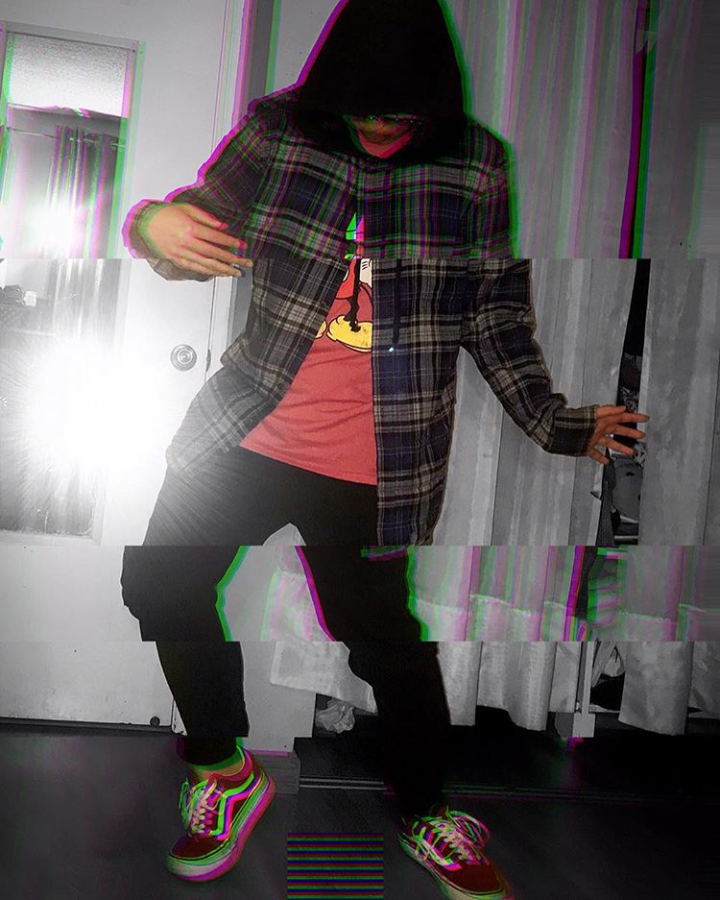

Artist Statement
Seeking inspiration and capturing memories is a part of who I am as an individual to my mind and heart. As a student, I like to meet and make friends with new people to expand inspiration for myself and others. My style of art often consists
of drawing graffiti fonts, anime/manga, and sometimes photoshoots and photo editing. My current inspiration is a Japanese contemporary artist, Takashi Murakami.
Everyday, I see and hear art everywhere. Things like music, people's emotions and movements in our world increase my ideas for the work I want to produce. They're a way to express myself and show my viewers what my true colors are as an artist, like a self portrait of who I am. Without these things, I wouldn't know what art or inspiration means.

Back to homepage!